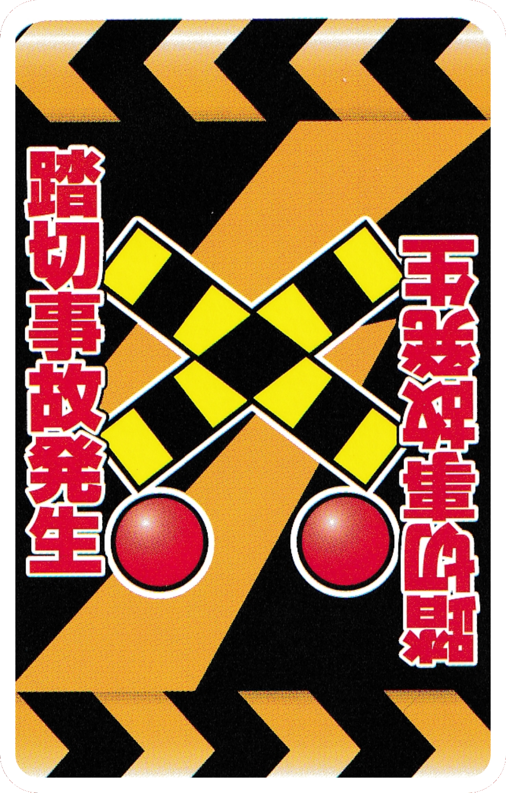
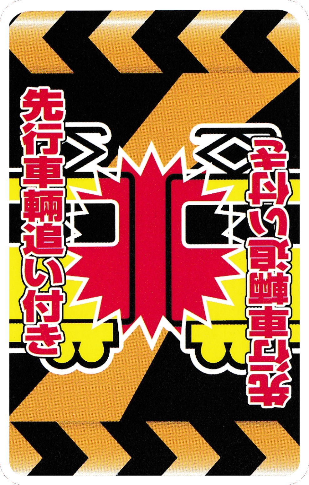

Emergency Cards
When these cards are played, it immediately becomes the turn of the person who is targeted who will draw another card. If the target has an 「Emergency Break」 in their hand they must immediately play it to cancel out the effects. Otherwise, they play their turn normally and then follow the effects of the emergency card.

●「Railroad Crossing Accident」
If this card isn't removed with an 「Emergency Break」, discard the entire line.
※ The target will take their turn, skipping everyone else.

●「Slow Leading Train」
There is a slow train ahead and to prevent a collision you must use an e「Emergency Break」! Until you use an 「Emergency Break」, every turn remove the distance card underneath this one. If there are no distance cards left, and just the station, discard the station and this card.
※ The target will take their turn, skipping everyone else.